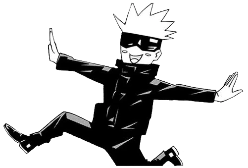
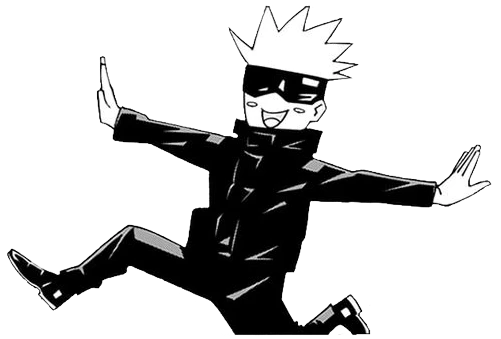

Gojo Satoru
a jujutsu sorcerer



Satoru is a complex individual. He is usually nonchalant and playful towards people such as his students, (close) colleagues, and friends, but unsympathetic and cruel with people such as the Sorcerer Executives. He is very confident in his abilities and reputation as a powerful sorcerer, casually dismissing personal threats from Sukuna by saying that he could trounce the King of Curses. In a crisis, Gojo is capable of being cold-blooded. He will prioritize his enemies' destruction over saving innocent people when he thinks that the sacrifice is unavoidable. However, this only extends to the people killed by his opponent; Gojo will not do any lasting harm or killing anyone innocent to gain the upper hand.
At the base level, Limitless is an innate technique which is derived from the Gojo family. Having been naturally inherited, this technique works via precise manipulation of space at the atomic level, resulting in multiple subsequent results and techniques within the overall ability. With the manipulation of space as just the base level of the technique, Limitless has three standard and one "non-standard" form beyond this, one being the infinty. INFINITY being the neutral form of the Limitless, it is commonly known as the ability to stop, although this is a common misconception as the true power of the Infinity is to slow things down. When something attempts to hit Satoru, the person or object in question instead hits the infinity between himself and them.
Being an inversion of Blue, Red has the opposite effect. Using his reversal technique to invert the properties of Blue, Satoru activates the divergence of his infinity and causes a repulsive force. Being an ability that is powered by positive cursed energy and formed as a reverse curse technique, the ability has two times the destructive ability of Blue.

I love watching anime and i will make astonishing webpages in the coming future so stay tuned.